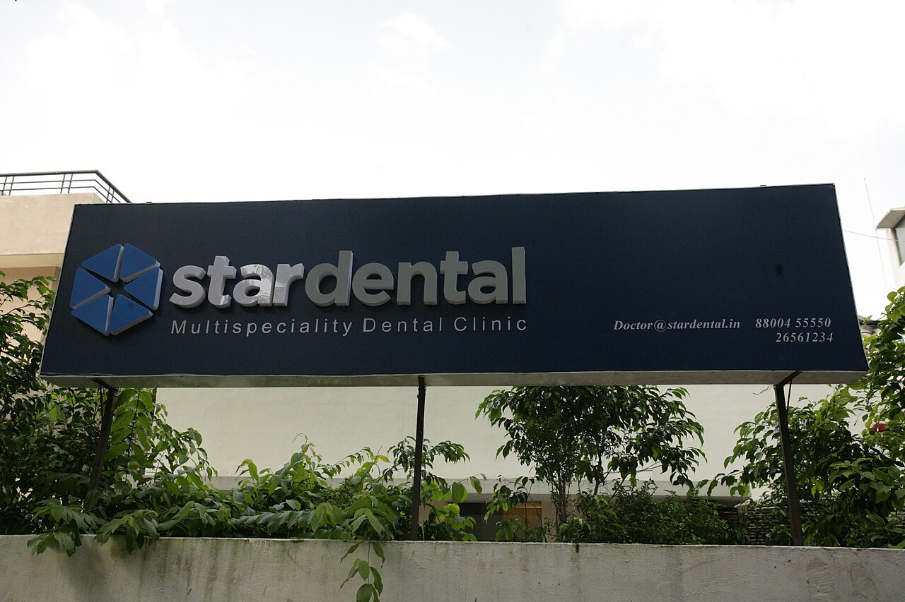

Trusted dental care for Bheemgal — visit Hitech Dental Clinic in Nizamabad, just 30 km away.

Bheemgal is a growing town in Nizamabad district with a strong agricultural and trading community. For residents seeking a dentist in Bheemgal area with advanced capabilities, Hitech Dental Clinic in Nizamabad city delivers expert care across all dental specialties.
Our clinic attracts patients from Bheemgal town and nearby villages who need specialized treatments beyond basic dental care. We are known for ethical practices, honest diagnoses, and treatment plans tailored to each patient's budget.
Bheemgal is approximately 30 km from Nizamabad. Regular bus services connect Bheemgal to Nizamabad city, and the drive by car takes about 40 minutes.